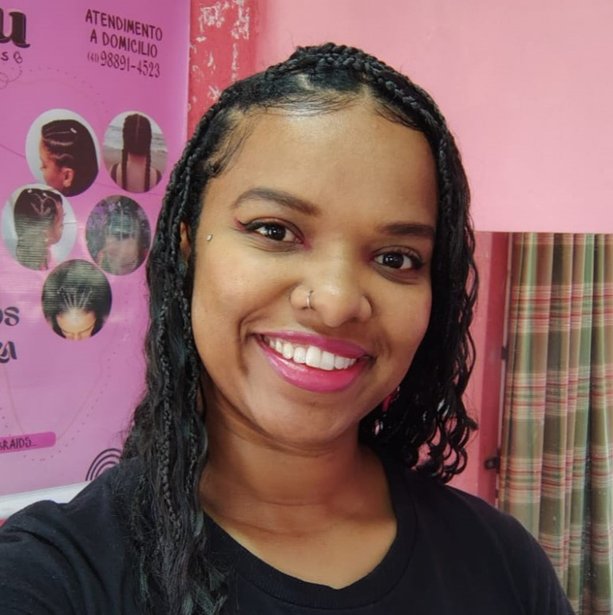
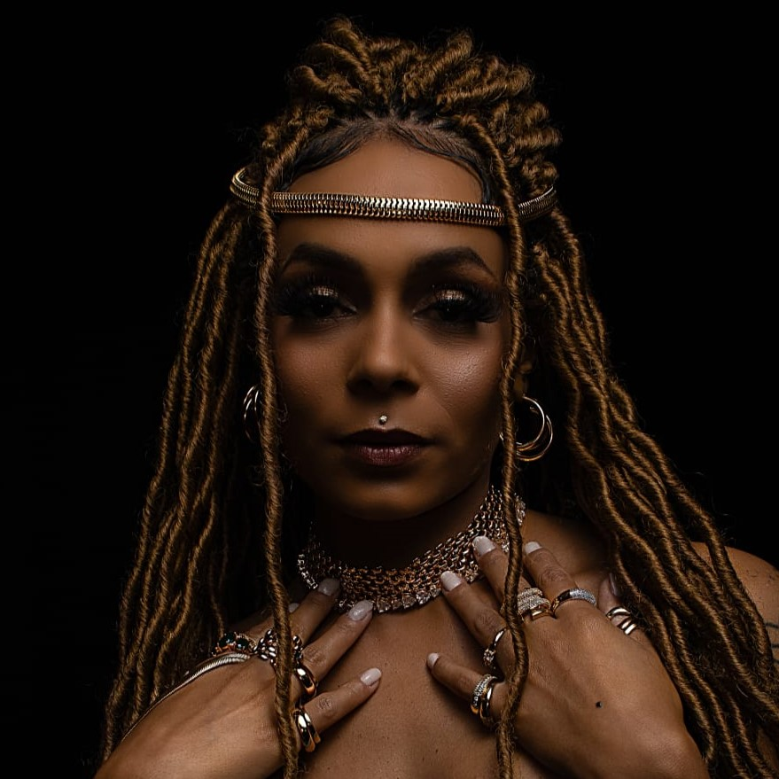
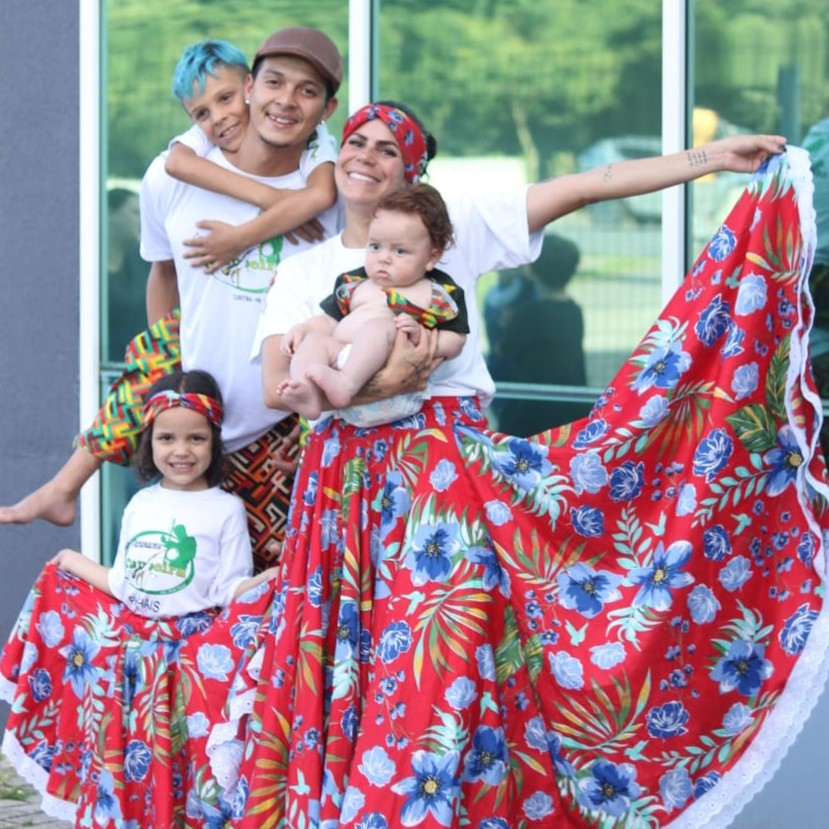
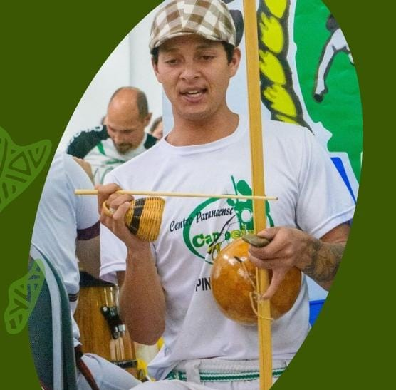
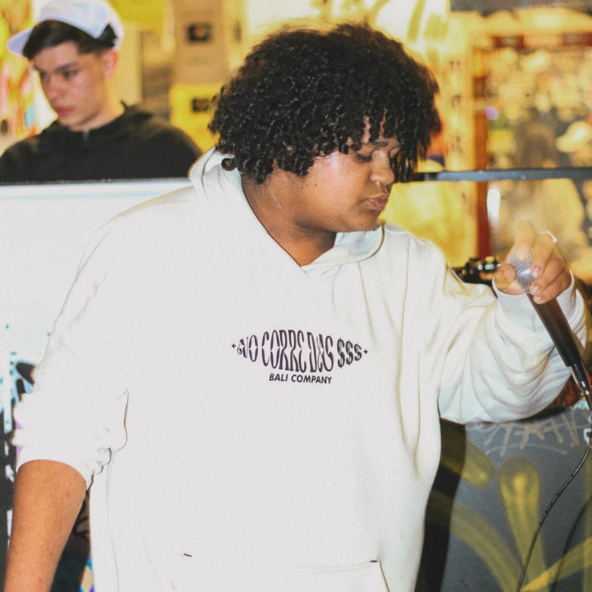
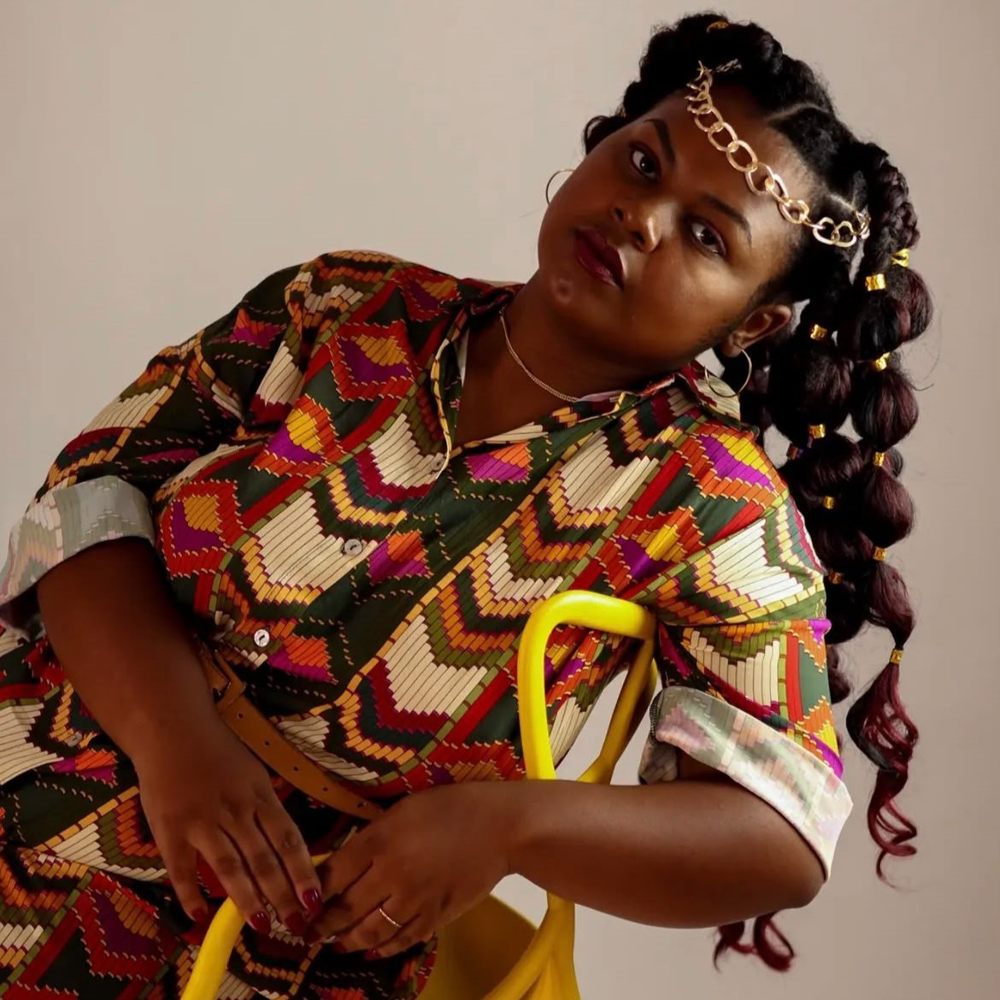

Bem-vindo ao GRIOT- Piraquara
Segues em busca da glória Cidade dos sonhos meus! GRIOT!
Piraquara possui uma rica diversidade cultural que reflete a contribuição de diferentes comunidades para o desenvolvimento do município. Nesse contexto, a valorização da memória e da cultura afro-brasileira fortalece o reconhecimento da participação da população negra em sua história, incentivando a preservação de suas tradições e a promoção da diversidade e da igualdade racial.
![Vista de um parque ao ar livre
em dia ensolarado, destacando no primeiro plano uma passarela curvilínea de madeira com
guarda-corpo de troncos roliços que se estende sobre um lago calmo. À esquerda, nas águas
serenas que refletem o entorno, nadam alguns patos brancos, enquanto a estrutura da ponte
faz a curva em direção à margem oposta. O gramado bem cuidado ao fundo abriga pequenas áreas
de lazer e é contornado por uma densa mata de árvores verdes, entre as quais se destacam
algumas araucárias. O céu azul intenso, preenchido por
nuvens brancas e macias, completa a cena com iluminação natural marcante.](../mainStyle/assets/images/Piraquara.jpg)
Conteúdos que valorizam a Cultura Negra
Acesse a cultura afro-brasileira piraquarense.






Músicas
Textos


![Capa do livro [Nome do Livro]](https://cdhjzkmlucahtllfpdlx.supabase.co/storage/v1/object/public/Biblioteca/CapasImagem/semcapa.jpg)
×